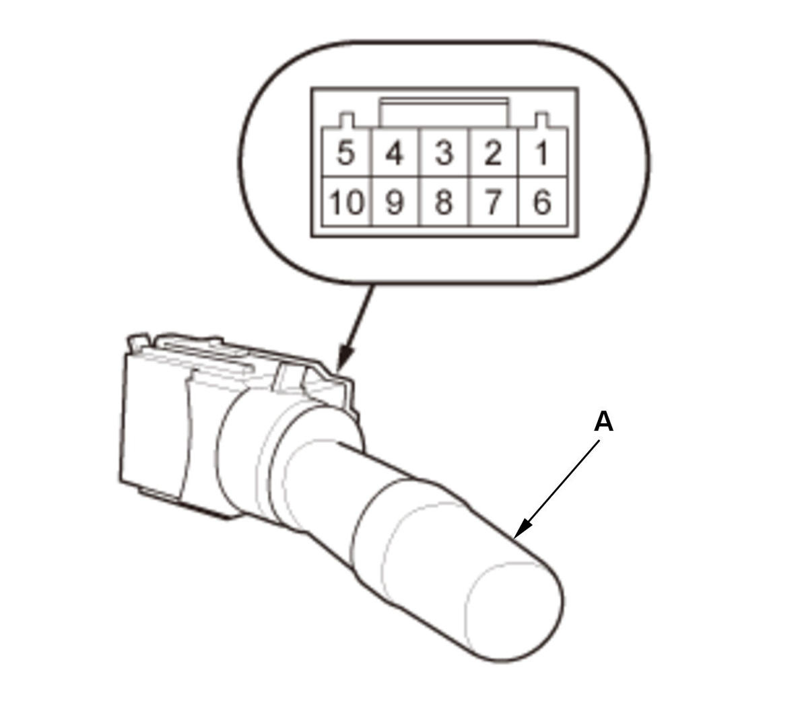
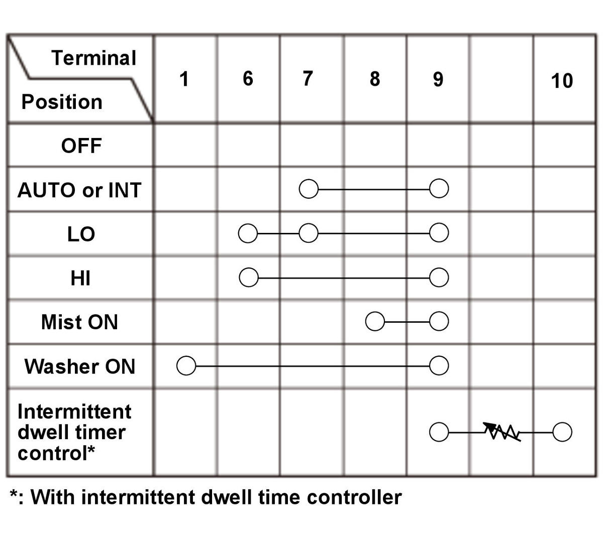
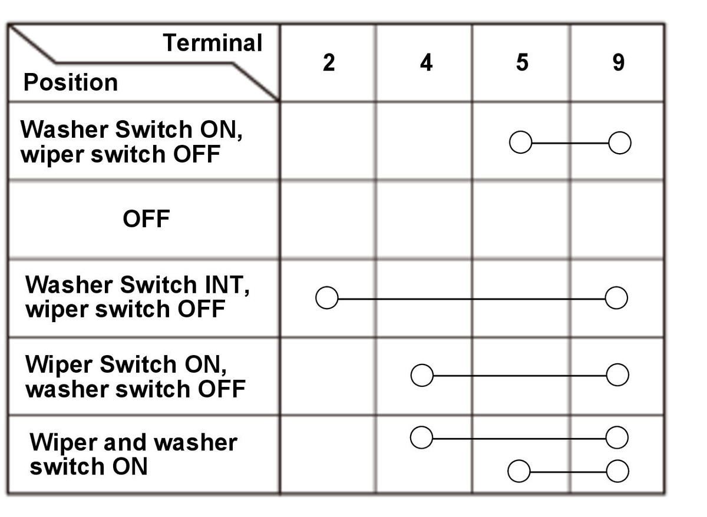

Wiper/Washer Switch Removal, Installation, and Test: Test
- Wiper/Washer Switch - Test



Courtesy of HONDA, U.S.A., INC.HONDA, U.S.A., INC.HONDA, U.S.A., INC.
WindshieldRear window (with rear window wiper)
1. Check for continuity between the terminals in each switch position according to the table. 2. If the continuity is not as specified, replace the wiper/washer switch (A).